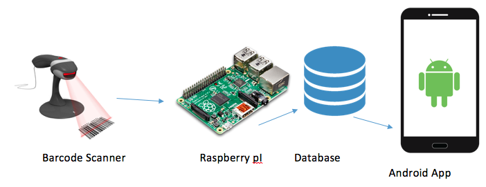

Introduction
This build log will help students replicate my project for future use, I will show step by step instructions on how to do so.
I’m willing to post all the commands used and also the libraries used from outside sources, I will also be including the download links to the C and Python programs that were written by myself. Download links will be posted at the bottom of the page.
The main point of this project is to create a new parts crib system that is more efficient and more advanced than just using paper slips to sign out item from the crib. What I have in mind for the project is to create a barcode scanner using either a web cam or either a laser scanner (if we can afford one) to scan student numbers and items that will be checked out by the students.
So when a student comes to the parts crib for an item, they will be assigned a barcode will their student number if its their first time coming and then they’ll be ready for item take out. All the administrator has to do then is to scan the student number and then start scanning then items that that user requested as they will each have a barcode. After the scanning is done, the user is ready to go and their student number will be stored in the local database on the raspberry pi.
The students that I worked with on this project were, Divesh Oree, Masoud Rahguzar, Gurpreet Jhita, and myself (Rafil Yashooa).
System Diagram
The system diagram should look like this:

Figure 1: The system diagram showing the interaction of the inputs, processes, and outputs that will be integrated over the next semester.
The barcode scanned will be processed by the raspberry pI which will store it on a database and then the android application that is also created by my group will fetch from the database and display the information. Note: only administrators will be able to view the student numbers, regular users will only be able to view the inventory count of items in the crib.
Bill of Materials/Budget:
Project budget will be posted below:
| Item | Site | Price |
|---|---|---|
| Raspberry pI 3 B model | Amazon.ca | $70.80 |
| HDMI | Bestbuy.ca | $15.00 |
| Power Supply | Amazon.ca | $9.00 |
| Raspberry pI 3 Case | Amazon.ca | $10.00 |
| Web cam | Bestbuy.ca | $20.00 |
| Barcode Strips | Barcodesinc.com | $5.00 |
| 32GB SD card | Amazon.ca | $10.00 |
| LEDS | Amazon.ca | $2.00 |
| PCB board | Amazon.ca | FREE |
| Total: | $141.00 |
The items listed in the table above were mostly from amazon, if not you should have items like some LEDs, a web cam, or an HDMI cable laying around the house that you could use for the purpose of this project. The total cost was about $141 but it could be cheaper if you have some of the items at home or a bit more expensive if you’d like to go a step further and buy a decent laser barcode scanner.
Also, items like the PCB board will include build in LEDs that can be used for this project for a cost of just a little time soldering. Humber College should provide these items for no cost.
Time Commitment:
Time commitment table will be posted below:
| No. | Task Name | Time consumed |
|---|---|---|
| 1. | Ordering parts/ arrival | 6 days to 1 week |
| 2. | Parts Unboxing | 10mins |
| 3. | Raspberry pI Setup/Installation | 3 hours |
| 4. | zBar library installation | 2 hours |
| 5. | PCB soldering | 1 hour |
| 6. | PCB testing | 1 hour (with fixes) |
| 7. | Barcode coding (Python) | 3 hours |
| 8. | LED Lighting (C) | 30mins |
| 9. | Beep buzzer audio (C) | 1 hour |
| 10. | Tightvncserver installation | 10mins |
| 11. | Project Setup | 10mins |
| 12. | Project Power up | 10mins |
All these tasks were competed over about 15 weeks of a busy student schedule, if anyone has more free time, they could complete it within a week max. Especially with instructions like this being already posted.
Mechanical Assembly:
For the mechanical assembly of this project, it is very easy and simple. The web cam connects directly to one of the USB ports provided by the raspberry pI, the PCB with connects also connects directly to the 40 pin pinout. To connect the audio speaker to the pI, connect the red positive wire to pin 8 on the raspberry pI, and the negative black wire to any ground pin on the pI.
To test each part separately, you could run each program separately as the main program calls the other programs.
PCB / Soldering:
PCB soldering toke place in my own house as I own a soldering kit from high school, I soldered the PCB in a pretty way but on one of the resistors I over soldered and tried to scrape it off and that resulted in damaging one the lines so I had to solder another wire in order to connect the damaged line. NOTE: I used the telescope in the prototype lab to view where the damaged line was.
Power Up:
When you start up a raspberry pI, you should always start with updating it by using these commands: sudo apt-get update and sudo apt-get upgrade.
You’ll want to do this as your raspberry pI will get the latest patches and updates from the developers.
First of all, you’ll need to install python and the python/zbar library using the following commands:
sudo apt-get install python-dev
sudo apt-get install python-pip
Next, you’ll need to install pillow
sudo apt-get install python-pip
sudo apt-get install python-httplib2
After, go ahead and download the zbar library from this github account: Here
Click on “Clone Or download” and you should see it start downloading
After that, use the unzip command to extract the folder and the cd into the folder.
After you’re in the folder, execute the following command: python setup.py install –user
If everything was done right, you should get no errors and the files should be extracted.
After that, use the code that I provided in the downloads bellow and download all the downloads as they all link to each other.
After downloading all the files, you’ll need to compile the red_light.c, green_light.c and also softTone.c
Compiling them using: gcc –Wall –o executable name c_file.c – lwiringPi
Where ‘executable name’ is the name of the executable you’ll want them to be, ‘c_file.c’ is the source file. NOTE: make sure the executable names are the same as the ones in the bar_code.py file as they will be called from there.
If everything is done right, you should be able to run and scan a barcode, when it successfully scans the barcode, you should notice the light turning green and the beep audio sound coming from the speaker, after it scans it, you should be able to see the created file called student_number.txt which will contain the stored student numbers.
Unit/Production testing:
PCB testing should be done before hooking it up the raspberry pI as it could have shorts and could damage the pI, test it using a 5v supply and a multi meter to see if it converts the 5v into 3v going into the system and also check for shorts at every end. If you’re still having trouble, then use a telescope to go over the circuit lines to check to see if they’re not cut or damaged.
After doing so, you could assemble it on your raspberry pI and run the i2cdetect program by running: ./ i2cdetect -y 1. You can also check the LED by running ./traffic2B.
Is the project reproducible by following these instructions?
Yes it is, this project can be easily reproduced by following the instructions above as I listed every download and every tool you’ll need to install on your pI. I also provided the code under my github page.
Downloads:
All the downloads will be posted under my github page:
Source Files: Here